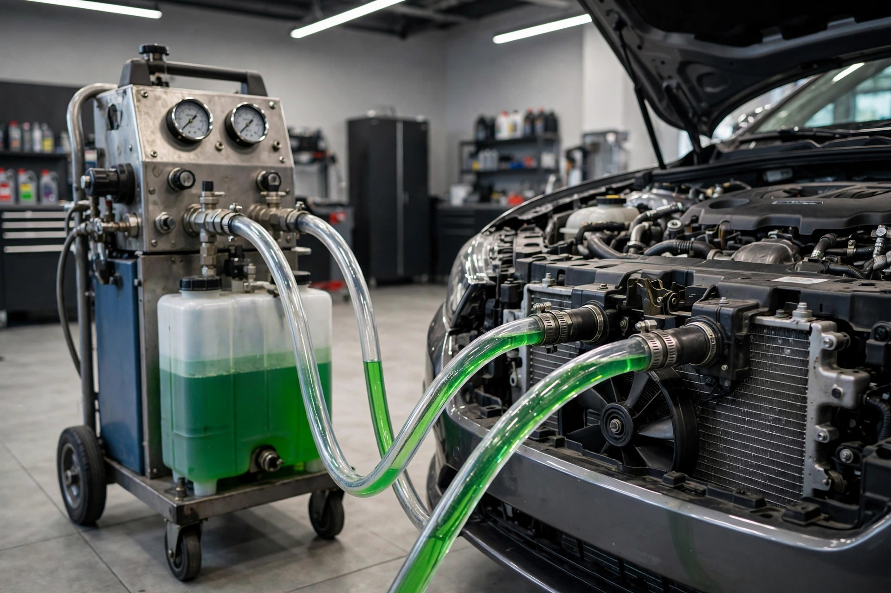
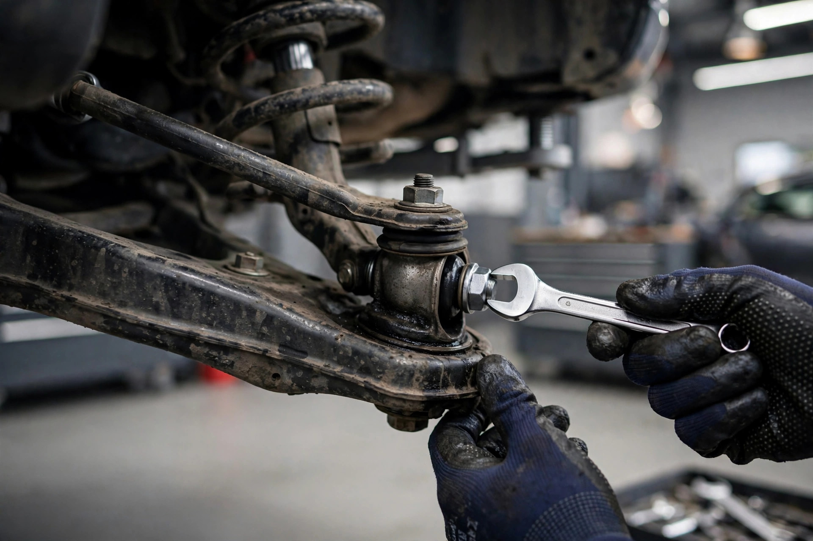
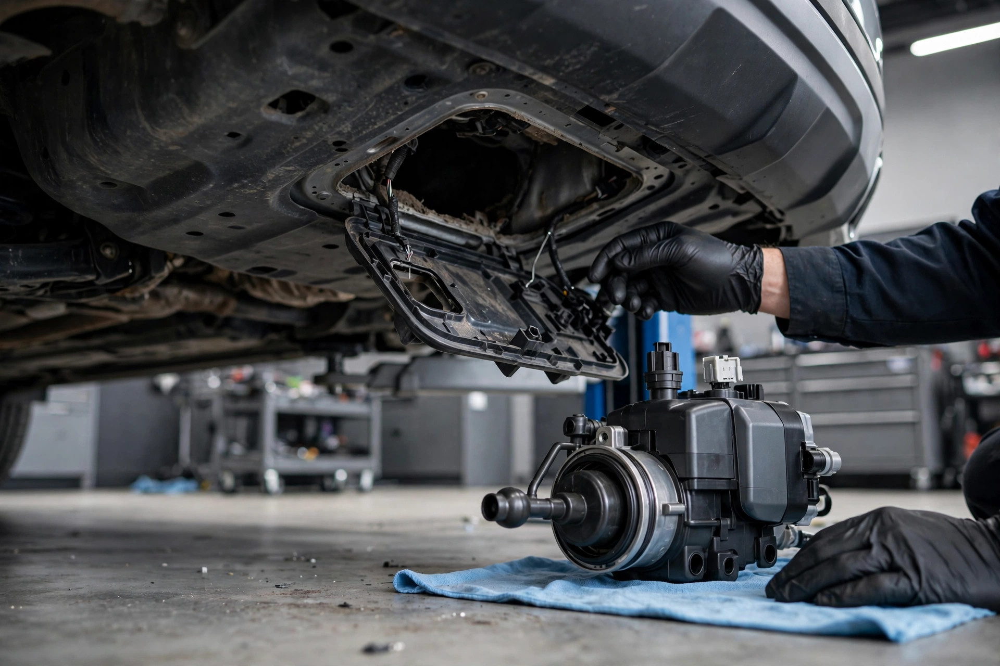
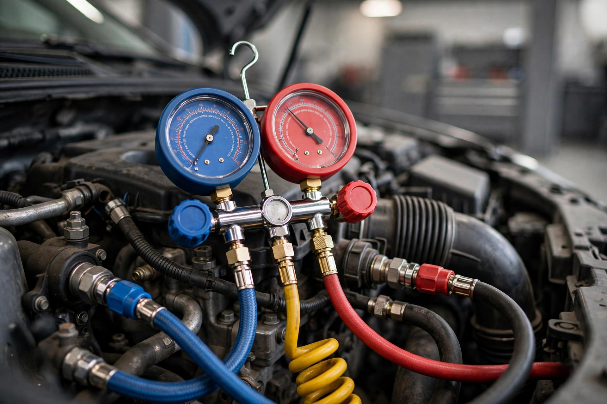

Coolant Flush
Protect against overheating and winter freeze ups.
Protect against overheating and winter freeze ups.
Coolant does two jobs: it carries heat away from the engine and it prevents freezing and corrosion inside the system. Old coolant turns acidic, loses its anti corrosion additives, and lets scale build up in the radiator and heater core.
Our flush exchanges the old coolant for fresh antifreeze mixed to handle Ontario winters, and we pressure test the system to catch weak hoses, a tired radiator cap or a seeping water pump before they strand you.
Serving North York and the GTA
Drivers from across Toronto, Mississauga, Scarborough, Etobicoke, Vaughan and Markham trust Apex for coolant flush. Our shop is at Unit 41 & 42, 4544 Dufferin Street, Toronto, ON M3H 5X2, right off Highway 401.
How to tell you need it
- Temperature gauge runs higher than normal
- Coolant looks rusty, brown or has particles floating in it
- Heater blows lukewarm in winter
- Sweet smell under the hood or low coolant level
- It has been more than 5 years or 100,000 km since a flush
How we do it
Inspect the system
Hoses, clamps, radiator, reservoir and water pump are checked for leaks, swelling and corrosion.
Flush and exchange
Old coolant is fully exchanged, not just drained, so acidic fluid does not stay trapped in the block and heater core.
Refill to spec
Fresh antifreeze goes in, mixed for freeze protection well below minus 35, and the system is bled of air pockets.
Pressure test
The system is pressure tested hot to verify it holds, and we confirm the heater blows hot and the gauge stays steady.
What is included, how long it takes, how we price it
What is included
- Complete drain of old coolant from radiator, block and heater core
- System flush to remove scale and deposits
- Fresh antifreeze mixed for Canadian winter protection
- Thermostat, hoses and water pump area inspection
- Pressure test of the full cooling system
- Bleeding of air pockets and a heat output check
How long it takes
About 1.5 to 2 hours, including the pressure test and proper bleeding.
How pricing works
A flat service price for most vehicles, confirmed before we start. If the pressure test finds a leak, we quote that repair separately and you decide.
Coolant Flush questions
Topping up fixes the level but not worn out coolant. If the fluid is old or rusty, a flush is the real fix. We test the coolant condition and tell you which one you need.
Often low coolant, a stuck thermostat or a clogged heater core. We diagnose before flushing so you do not pay for a service that cannot fix it.
Most vehicles call for 5 years or 100,000 to 160,000 km. Your owner manual has the exact interval for your coolant type.
Related services

Ball Joint Replacement
Ball joint and control arm replacement with proper torque specs and a road test on every job.
Learn more →
Fuel Pump Replacement
Fuel pump diagnosis and replacement with fuel pressure testing before and after the job.
Learn more →
AC Service and Replacement
AC recharge, leak detection, compressor and component replacement with proper evacuation and testing.
Learn more →Your car deserves the Apex treatment
Call, email or book online. We will diagnose the issue, give you an upfront price, and get you back on the road with work done right the first time.